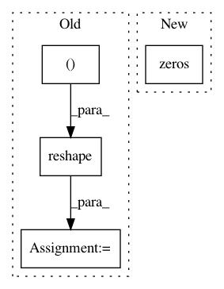

45a10bc6d708fade197a37bfbc62312caf70e6a7,keras/layers/convolutional_recurrent.py,ConvLSTM2D,get_constants,#ConvLSTM2D#Any#Any#,438
Before Change
constants.append([K.cast_to_floatx(1.) for _ in range(4)])
if 0 < self.recurrent_dropout < 1:
ones = K.ones_like(K.reshape(inputs[:, 0, 0], (-1, 1)))
ones = K.tile(ones, (1, self.filters))
def dropped_inputs():
return K.dropout(ones, self.recurrent_dropout)
After Change
shape[-1] = self.filters
ones = K.zeros_like(inputs)
ones = K.sum(ones, axis=1)
ones = self.input_conv(ones, K.zeros(shape),
padding=self.padding)
ones += 1.
In pattern: SUPERPATTERN
Frequency: 3
Non-data size: 4
Instances
Project Name: keras-team/keras
Commit Name: 45a10bc6d708fade197a37bfbc62312caf70e6a7
Time: 2017-02-17
Author: francois.chollet@gmail.com
File Name: keras/layers/convolutional_recurrent.py
Class Name: ConvLSTM2D
Method Name: get_constants
Project Name: keras-team/keras
Commit Name: c1a72b36444c8027c27c2dc02dc03d5b69a5e389
Time: 2016-10-13
Author: jeanmichel.arbona@gmail.com
File Name: keras/layers/recurrent_convolutional.py
Class Name: LSTMConv2D
Method Name: get_constants
Project Name: GPflow/GPflow
Commit Name: f4559a3d47510f776b3e38d5aceb07ee4b4b0ea9
Time: 2017-11-24
Author: james@prowler.io
File Name: gpflow/transforms.py
Class Name: DiagMatrix
Method Name: forward